library(ggplot2)
library(MASS) # Bostonデータセットを利用します
set.seed(42)
# 学習用データと評価用データを分割します。
split_data <- rsample::initial_split(Boston)
# 学習用データを説明変数（デザイン行列）と目的変数に分割します。
train <- rsample::training(split_data)
train_X <- dplyr::select(train, -medv)
train_y <- train$medv
# 評価データを説明変数と目的変数に分割します。
test <- rsample::testing(split_data)
test_X <- dplyr::select(test, -medv)
test_y <- test$medv2 aglm
2.1 パッケージの概要
aglm パッケージは、Accurate Generalized Linear Model (AGLM) を実装したパッケージです。AGLM は、加法的モデルの枠組にとどまることで一定の解釈性を維持しながら、「数値変数の離散化」と「フューズドラッソを応用した正則化手法」を組み合わせることによって目的変数と予測変数の非線形な関係を表現する予測モデルです。
2.2 AGLM モデルを構築する
2.2.1 Lasso回帰によるAGLMモデル
aglm関数の第1引数 x に説明変数（デザイン行列）を渡し、第2引数 y に目的変数を渡すことで、AGLMを学習させることができます。 また、predict 関数の引数 newx に新たなデータを渡せば、そのデータに対する予測が出力されます。
なお、AGLMはglmnetパッケージを活用して実装されており、出力されるAccurateGLMオブジェクトには多数のλの値に対応する結果が保存されています。 AccurateGLMオブジェクト用のpredict()関数のメソッドの引数sの値を指定することで、正則化の度合いが異なるさまざまなモデルによる予測を得ることができます。
library(aglm)
library(patchwork)
model_lasso <- aglm(
x = train_X,
y = train_y,
alpha = 1, # 正則化項のαパラメーターを指定（1：ラッソ、0：リッジ）
add_linear_columns = FALSE
)
preds <- predict(
object = model_lasso,
newx = test_X,
s = 0.062 # 正則化項のλパラメーターを数値またはベクトルで指定
) |> c() # 行列形式の出力をベクトルに変換
.rmse = round(yardstick::rmse_vec(test_y, preds), 3)
p <- ggplot(mapping = aes(x = test_y, y = preds)) +
geom_point() +
ggtitle(paste("Lasso@0.062 | RMSE:", .rmse))
preds <- predict(model_lasso, test_X, s = 0.62) |> c()
.rmse = round(yardstick::rmse_vec(test_y, preds), 3)
q <- ggplot(mapping = aes(x = test_y, y = preds)) +
geom_point() +
ggtitle(paste("Lasso@0.62 | RMSE:", .rmse))
p + q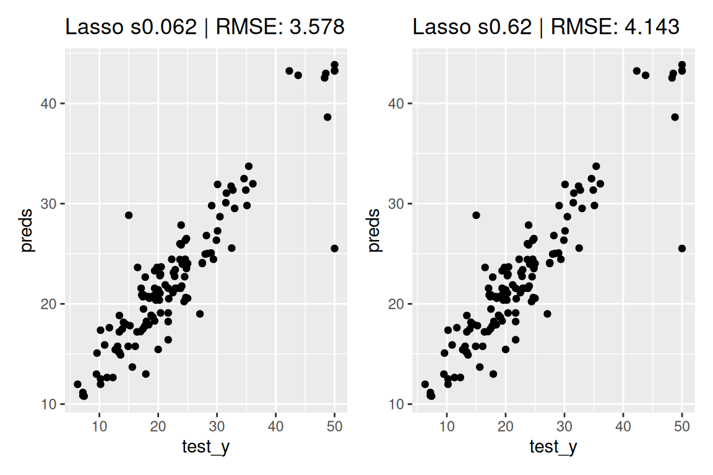
構築した AGLM モデルを plot() 関数に渡すことで、特徴量ごとの予測値への影響を可視化することができます。Lasso正則化を用いている場合、λの値を大きくするほど離散化した区間ごとに当てはめられたパラメータの差が消失していき、予測値が異なる区間の数が減っていきます。また、（add_linear_columns = FALSE としている場合）最後には特徴量の効果は消失します。
par(mar = c(4, 4, 1, 1)) # プロット領域中の余白を調整
vars = c("lstat", "rm", "dis", "ptratio")
plot(model_lasso, verbose = FALSE, vars = vars, s = 0.062)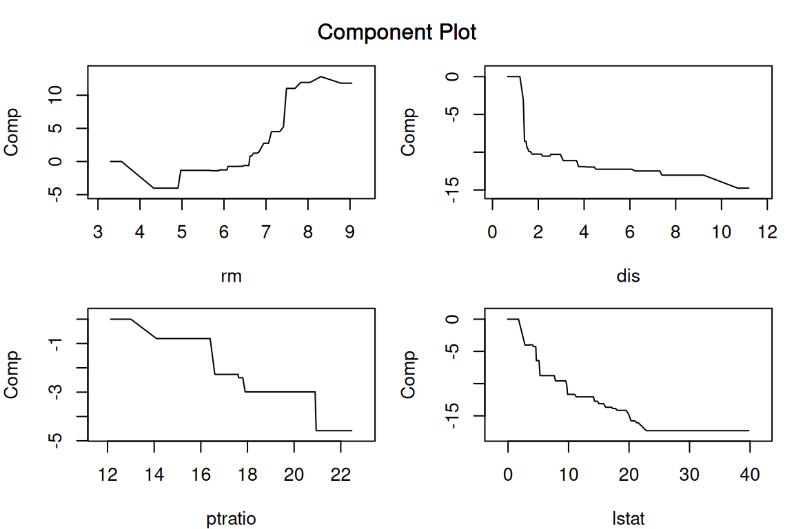
plot(model_lasso, verbose = FALSE, vars = vars, s = 0.16)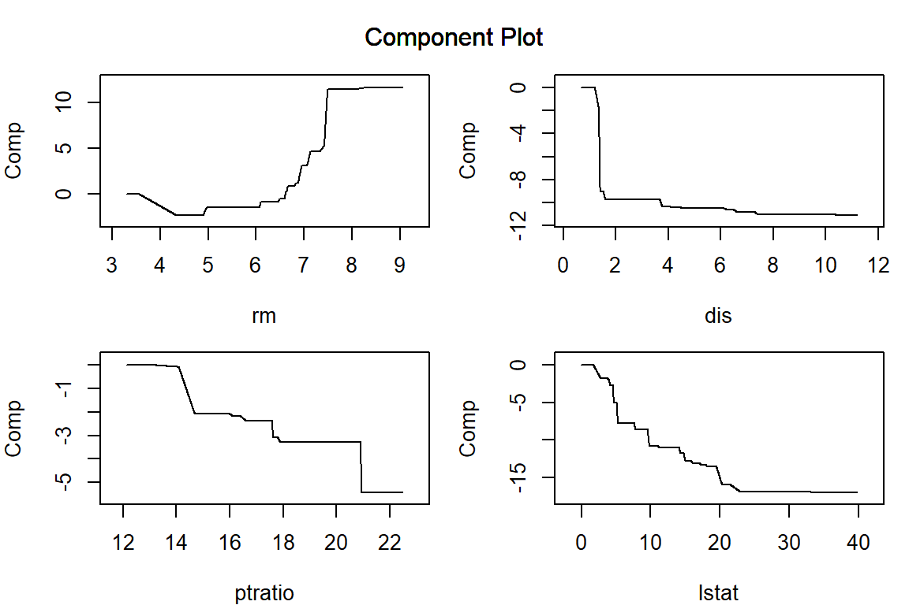
plot(model_lasso, verbose = FALSE, vars = vars, s = 0.62)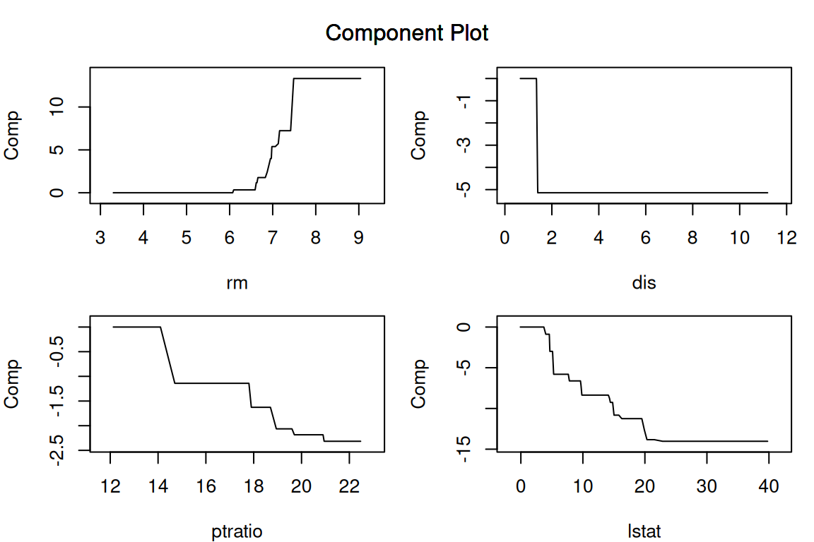
plot(model_lasso, verbose = FALSE, vars = vars, s = 6.3)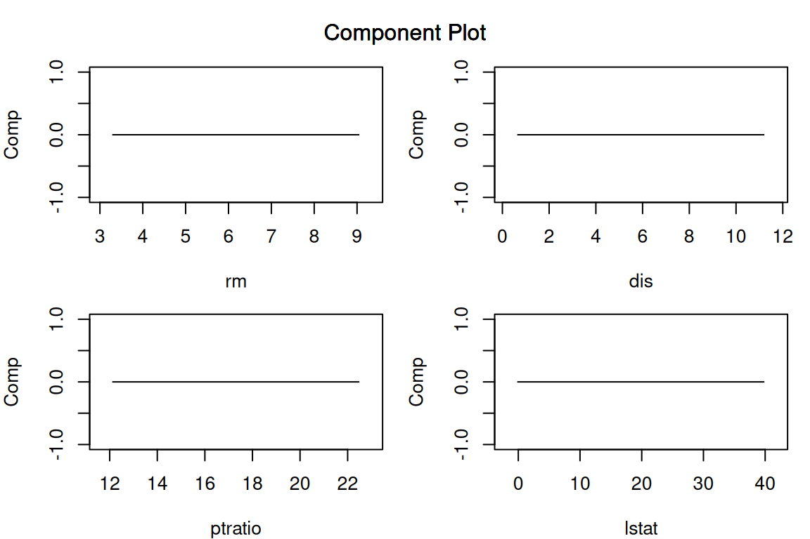
2.2.2 Ridge回帰によるAGLMモデル
aglm() 関数の引数 alpha を0にすると、パラメータの推定がリッジ回帰によって行われます。ここでは、λの値を明示的に与えてみます。
model_ridge <- aglm(
x = train_X,
y = train_y,
alpha = 0, # 正則化項のαパラメーターを指定（1：ラッソ、0：リッジ）
add_linear_columns = FALSE,
lambda = c(1000, 100, 10, 1, 0.1) # 正則化項のλを指定
)
preds <- predict(model_ridge, test_X, s = 1) |> c()
.rmse = round(yardstick::rmse_vec(test_y, preds), 3)
p <- ggplot(mapping = aes(x = test_y, y = preds)) +
geom_point() +
ggtitle(paste("Ridge@1 | RMSE:", .rmse))
preds <- predict(model_ridge, test_X, s = 100) |> c()
.rmse = round(yardstick::rmse_vec(test_y, preds), 3)
q <- ggplot(mapping = aes(x = test_y, y = preds)) +
geom_point() +
ggtitle(paste("Ridge@100 | RMSE =", .rmse))
p + q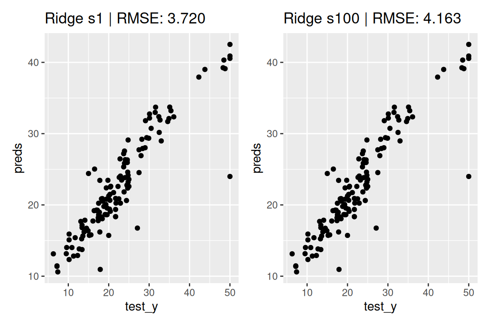
Ridge正則化を用いている場合、λの値を大きくしたときに、離散化した区間ごとに当てはめられたパラメータの差は小さくなるもののゼロにはならず、特徴量ごとの影響をあらわす関数がなめらかになっていきます。
par(mar = c(4, 4, 1, 1)) # プロット領域中の余白を調整
plot(model_ridge, verbose = FALSE, vars = vars, s = 0.1)plot(model_ridge, verbose = FALSE, vars = vars, s = 1)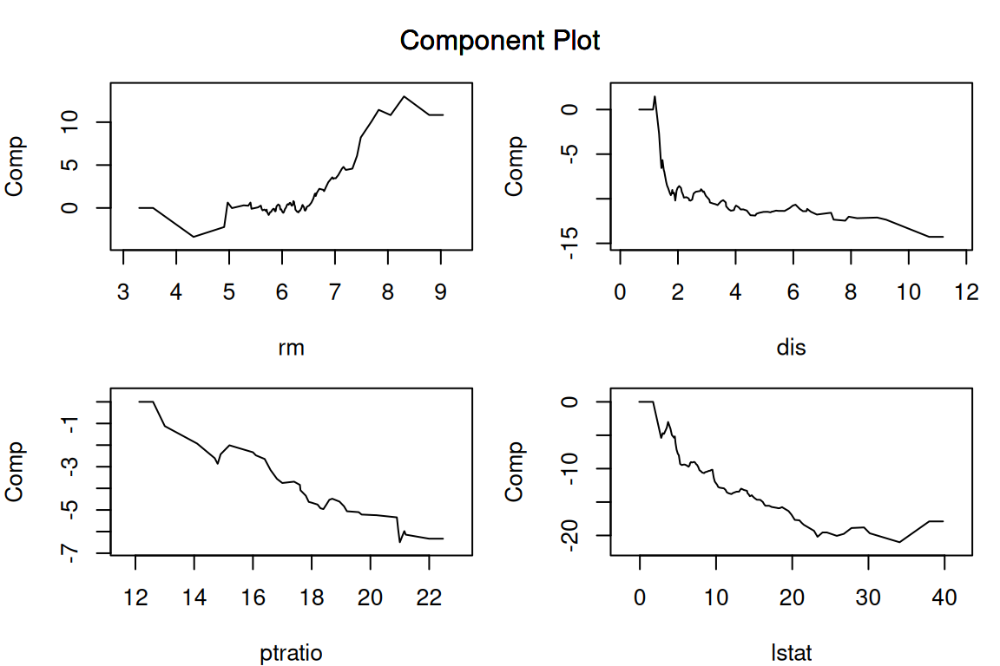
plot(model_ridge, verbose = FALSE, vars = vars, s = 10)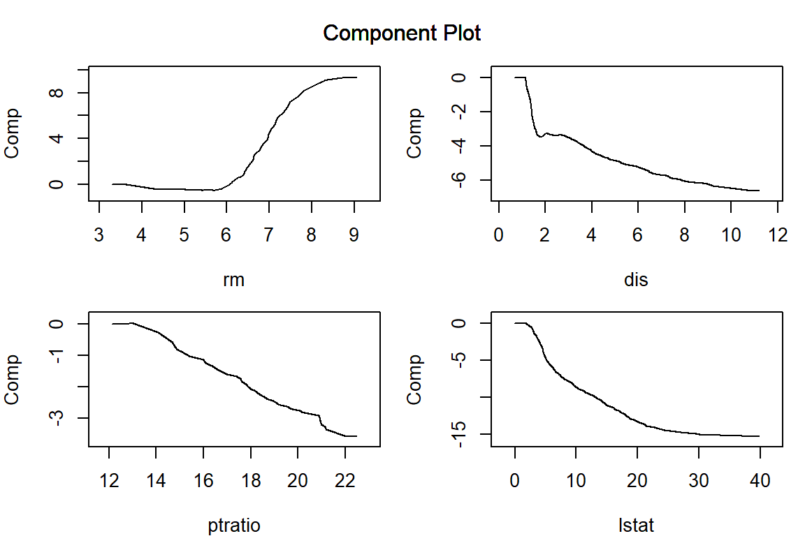
plot(model_ridge, verbose = FALSE, vars = vars, s = 100)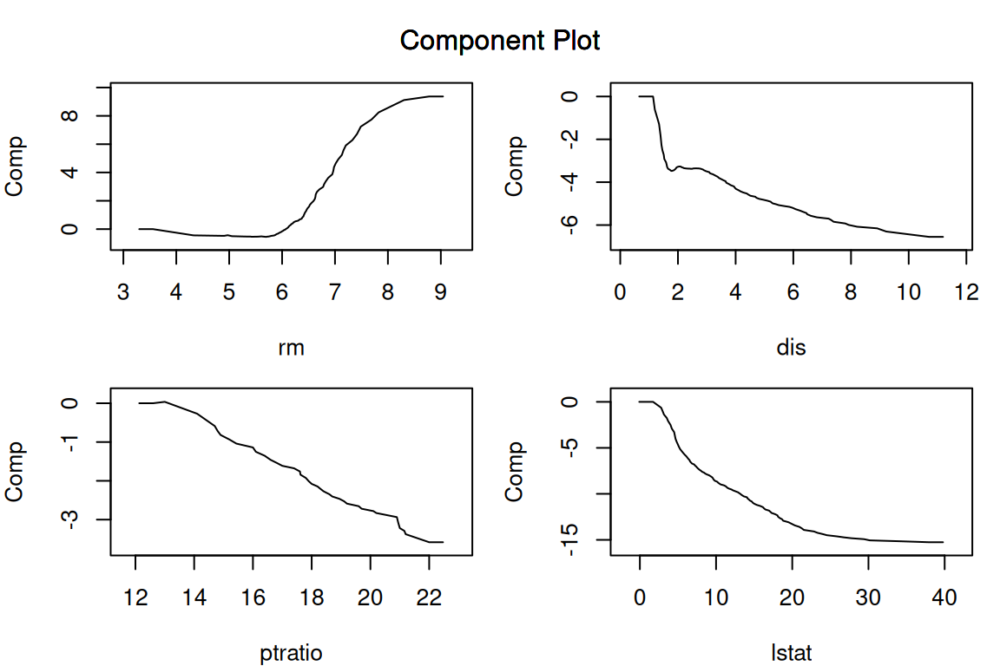
2.2.3 Elastic-NetによるAGLMモデル
aglm() 関数の引数 alpha に 0<\alpha<1 の値を渡すことで、エラスティックネットによる正則化を利用することもでき、ラッソとリッジの中間的な性質を持ったモデルが出力されます。
model_EN <- aglm(
x = train_X,
y = train_y,
alpha = 0.5, # 正則化項のαパラメーターを指定（エラスティックネット）
add_linear_columns = FALSE,
lambda = c(10, 1, 0.1, 0.01) # 正則化項のλを指定
)
preds <- predict(model_EN, test_X, s = 0.1) |> c()
.rmse = round(yardstick::rmse_vec(test_y, preds), 3)
p <- ggplot(mapping = aes(x = test_y, y = preds)) +
geom_point() +
ggtitle(paste("Elastic-Net@0.1 | RMSE =", .rmse))
preds <- predict(model_EN, test_X, s = 1) |> c()
.rmse = round(yardstick::rmse_vec(test_y, preds), 3)
q <- ggplot(mapping = aes(x = test_y, y = preds)) +
geom_point() +
ggtitle(paste("Elastic-Net@1 | RMSE =", .rmse))
p + q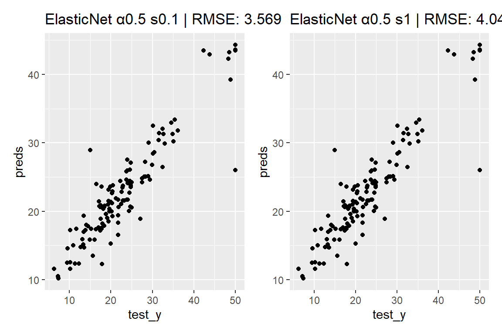
par(mar = c(4, 4, 1, 1)) # プロット領域中の余白を調整
plot(model_EN, verbose = FALSE, vars = vars, s = 0.01)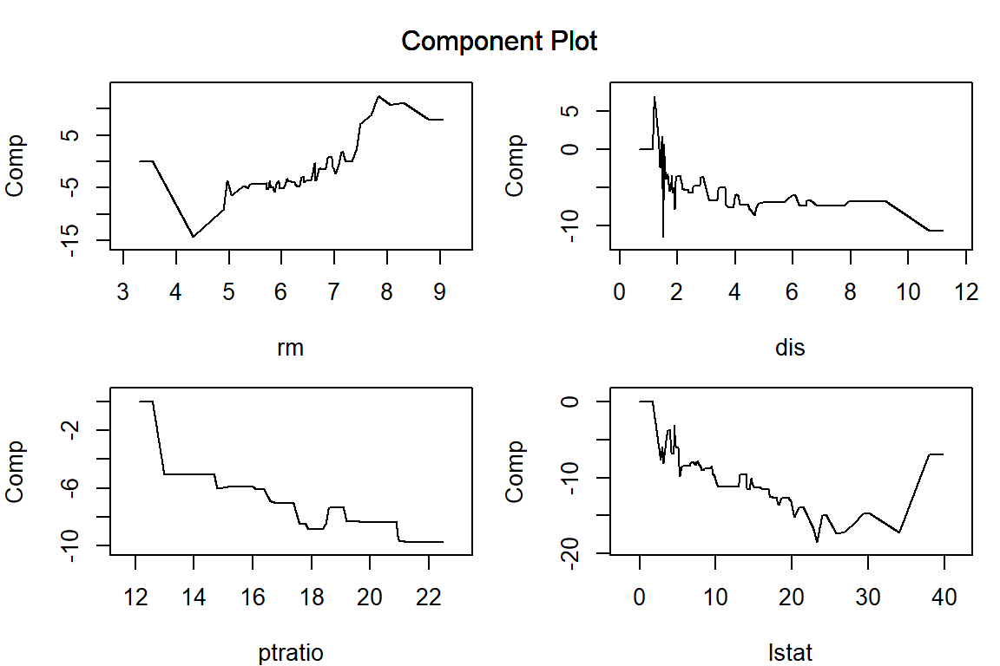
plot(model_EN, verbose = FALSE, vars = vars, s = 0.1)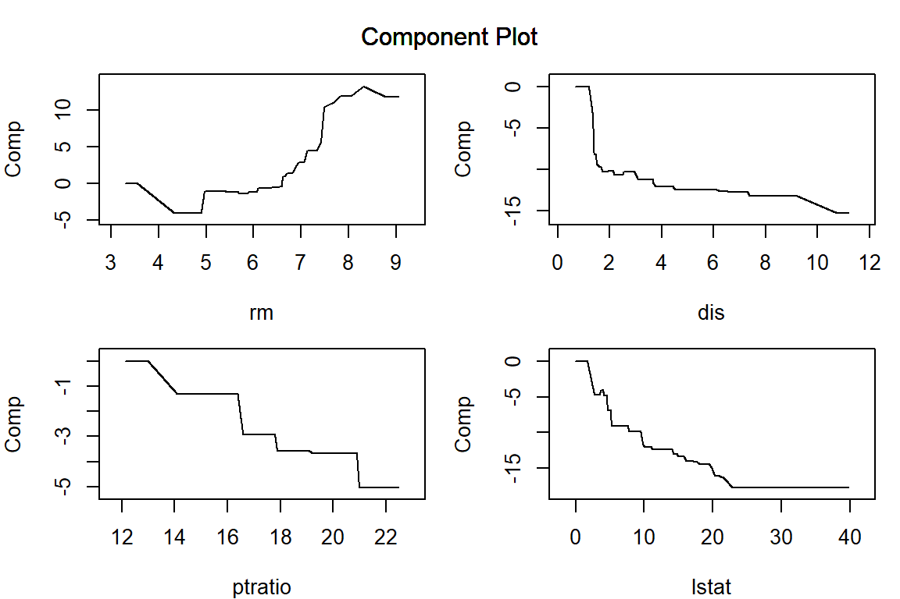
plot(model_EN, verbose = FALSE, vars = vars, s = 1)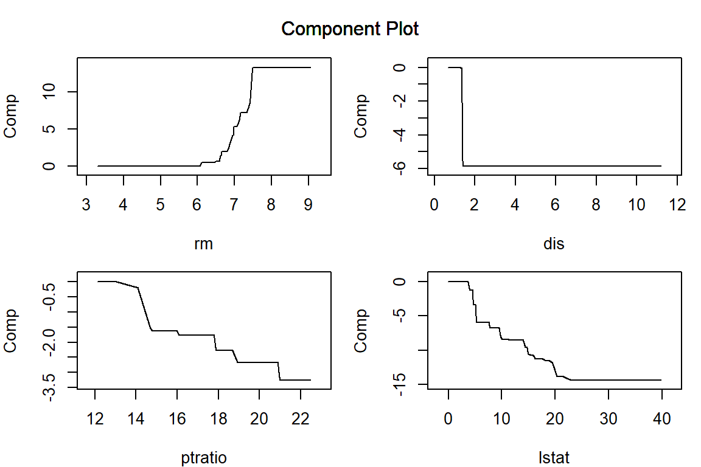
plot(model_EN, verbose = FALSE, vars = vars, s = 10)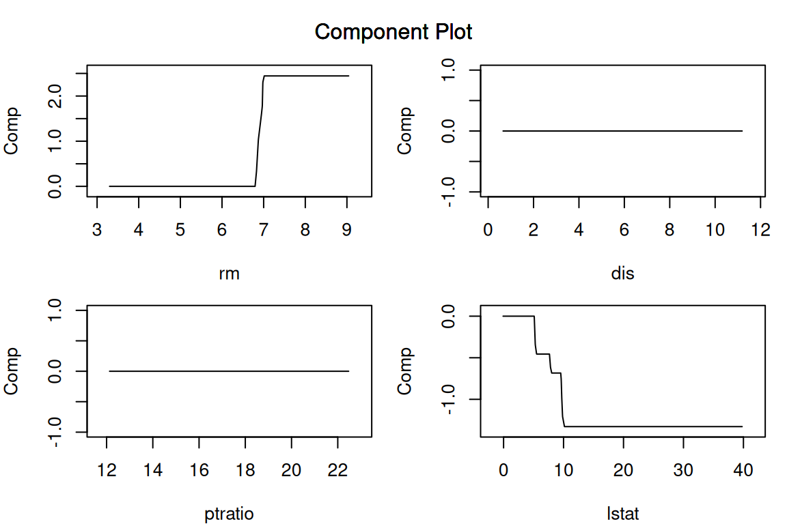
Note
AGLMの学習における正則化項は次の式で与えられます。
R(\{\beta_{jk}\};\lambda, \alpha)=\lambda\{(1-\alpha)\sum_j\sum_k|\beta_{jk}|^2+\alpha\sum_j\sum_k|\beta_{jk}|\}
ここで、罰則の対象となるパラメータ \beta は、連続変数を離散化して得られる区間のうち隣接するものの間の効果の大きさに対応しており、これが小さくなるほど特徴量の効果がなめらかになります。また、 \beta がゼロになると、隣り合う区間の効果が等しくなり、つまり、離散化の区間数が減少することになります。
\alpha はL1正則化とL2正則化のバランスを決めるパラメーターです。この形式の正則化項について、\alpha=1 の場合をラッソ、\alpha=0 の場合をリッジ、0<\alpha<1 の場合をエラスティックネットと呼びます。
λ は正則化項の影響度を決めるパラメーターで、この値が大きいほど、回帰係数の値が小さく抑えられるようになります。AGLMの正則化では、λ の値が意味をもつ範囲が \alpha の値によって大きく異なることに注意が必要です。
2.3 最適な λ を探索しながら AGLM モデルを構築する
AGLM パッケージは、ベースになっている glmnet パッケージの機能を数多く継承しており、たとえば cv.aglm() 関数を用いることで、λ のチューニングを自動で行うことが可能です。
lambda_candidates = seq(from = 10, to = 0, by = -0.1)
model_cv.aglm <- cv.aglm(
x = train_X,
y = train_y,
add_linear_columns = FALSE,
alpha = 1, # 正則化項のαパラメーターを指定（デフォルトは1）
lambda = lambda_candidates, # lambda の候補を指定
nfolds = 5 # クロスバリデーションの分割数を指定
)
lambda <- model_cv.aglm@lambda.min |> round(3)
preds <- predict(model_cv.aglm, test_X, s = lambda) |> c()
.rmse = round(yardstick::rmse_vec(test_y, preds), 3)
ggplot(mapping = aes(x = test_y, y = preds)) +
geom_point() +
ggtitle(paste0("Lasso CV Best@", lambda, " | RMSE = ", .rmse))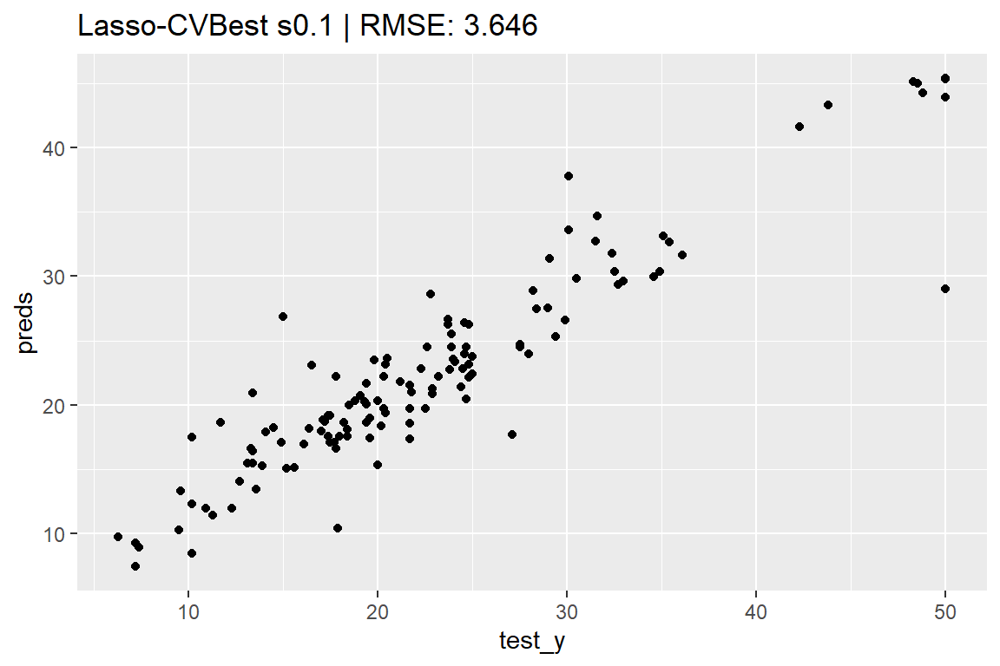
par(mar = c(4, 4, 1, 1)) # プロット領域中の余白を調整
plot(model_cv.aglm, verbose = FALSE, vars = vars, s = lambda)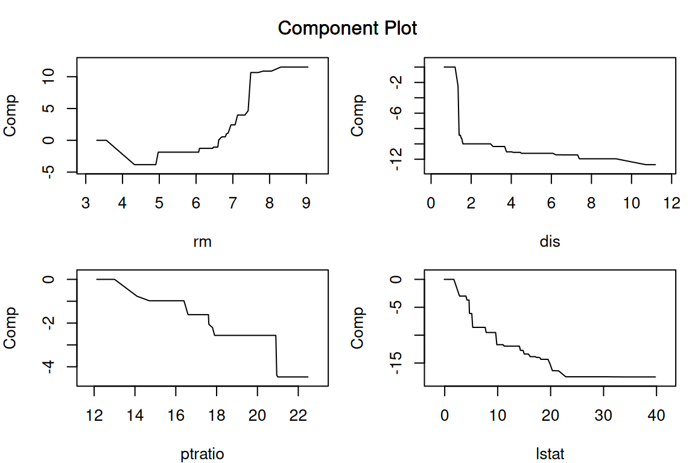
2.4 最適な λ, α を探索しながら AGLM モデルを構築する
また、同様に cva.aglm() 関数を用いることで、λ と α のチューニングを自動で行うこともできます。ただし、リッジ回帰を用いる場合のみ、意味のある λ の値の幅がまったく異なることに注意が必要です。
lambda_candidates = seq(from = 100, to = 0, by = -1)
set.seed(42)
models_cva.aglm <- cva.aglm(
x = train_X,
y = train_y,
add_linear_columns = FALSE,
lambda = lambda_candidates, # lambda の候補を指定
nfolds = 5 # クロスバリデーションの分割数を指定
)
alpha <- models_cva.aglm@alpha.min |> round(3) # 最適なα
idx <- models_cva.aglm@alpha.min.index # 最適なαのインデックス番号
model_cva.aglm <- models_cva.aglm@models_list[[idx]] # 最適なαによるモデル
lambda <- model_cva.aglm@lambda.min |> round(3) # 最適なλ
preds <- predict(model_cva.aglm, test_X, s = lambda) |> c()
.rmse = round(yardstick::rmse_vec(test_y, preds), 3)
ggplot(mapping = aes(x = test_y, y = preds)) +
geom_point() +
ggtitle(paste0("AGLM (alpha = ", alpha,
", lambda = ", lambda, ") | RMSE = ", .rmse))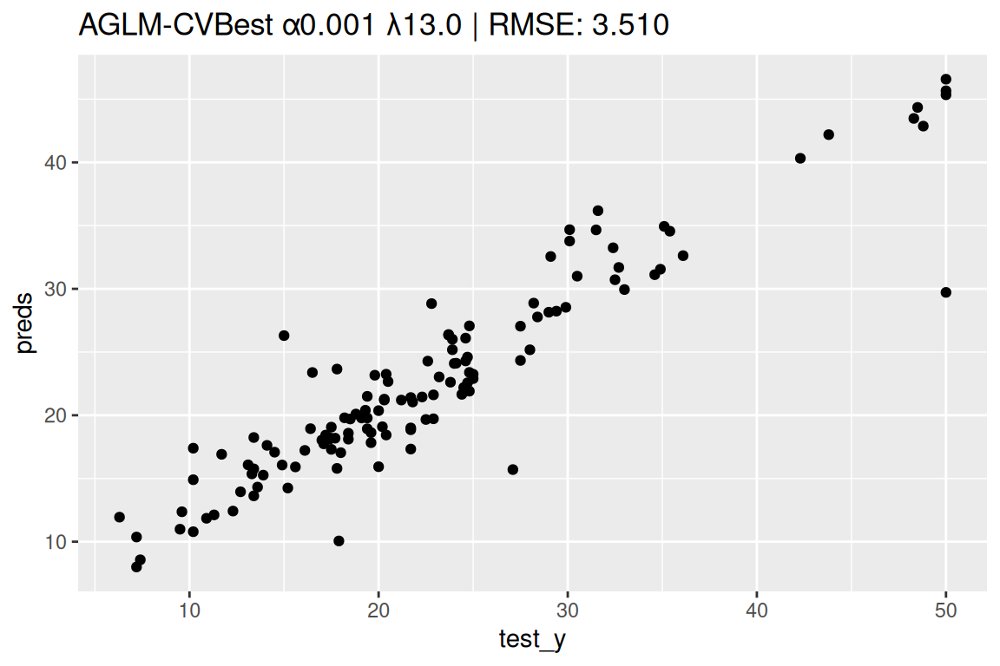
par(mar = c(4, 4, 1, 1)) # プロット領域中の余白を調整
plot(model_cva.aglm, verbose = FALSE, vars = vars, s = lambda)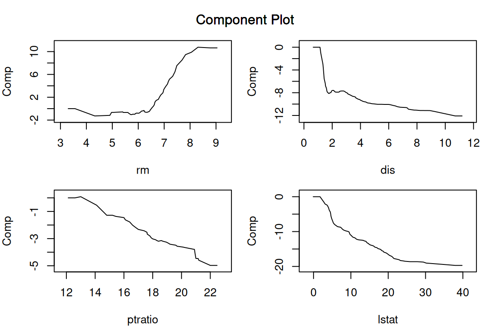
2.5 参考資料
[1] 藤田・田中・岩沢. (2019). “AGLM: アクチュアリー実務のためのデータサイエンスの技術を用いたGLMの拡張”.
[2] Fujita, S., Tanaka, T., Kondo, K. and Iwasawa, H. (2020). “A Hybrid Modeling Method of GLM and Data Science Techniques”.